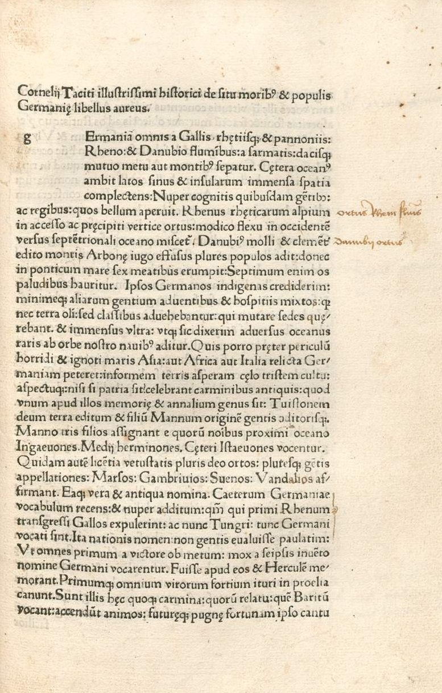
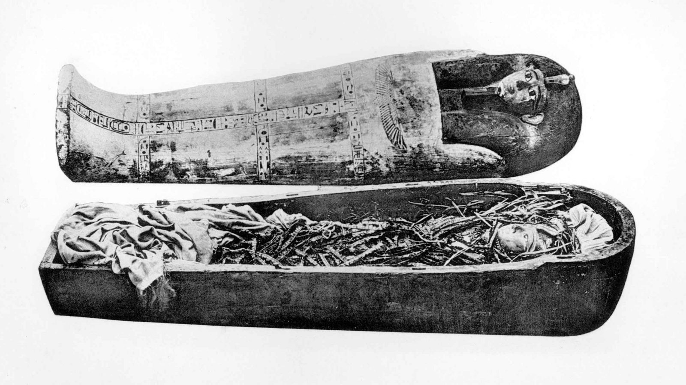

Unit 3 · Human remains · Lesson 5
Lives and times: what human remains reveal
What can the bodies of people from the past tell us about the worlds they lived in, and how far can a Roman writer explain how some of them died?
Year 11 Ancient History · Present with → or space · Read on a phone with R

Review · books closed · 5 minutes · press K for the timer
Six questions from Lessons 1–4 and Unit 2
- Writing · fix the register. Rewrite at the academic end: formal, precise and respectful. “That creepy bog mummy at the British Museum is basically just some freeze-dried guy from ages ago.” Lindow Man, who died in Britain between 2 BCE and 119 CE, is displayed freeze-dried in the British Museum. (A person and his name, not a creepy mummy or a guy; an exact date and place; no slang.)
- Name two environments that preserve bodies naturally, and what each does to a body. Ice (Ötzi: below freezing, his body slowly dried out in the glacier, a “wet mummy” in the museum’s words) and peat bogs (cold, waterlogged, acidic and low in oxygen: skin and soft tissue survive, but bone can soften or dissolve); also dry desert sand.
- Name one scientific method and one thing it revealed about Ötzi. X-ray: an arrowhead in his left shoulder (identified in 2001); or analysis of his stomach contents: a last meal high in fat, with wild meat (ibex and red deer) and cereals (2018 study); or DNA: mostly early-farmer ancestry (2023 study).
- How is Ötzi kept today? In a cold cell at about −6 °C and very high humidity (99%) at the South Tyrol Museum of Archaeology, Bolzano; visitors see him through a small window.
- Name one choice a museum has made in displaying a bog body, and what it does. Museum Silkeborg shows Tollund Man’s conserved head on a replica body, so visitors see a whole person while only the head is original; or the British Museum shows Lindow Man, freeze-dried, in a case.
- In OVPRL, what does R ask? Give an example from Persepolis. Reliability: how far can we trust the source, and for what question? The Apadana reliefs, for example, are reliable for how the king wanted his empire to be seen, but not for how the subject peoples felt.
Mark your own answers in a different colour. Which question did you find hardest?
Learning intentions and success criteria · 2 minutes
Today’s goals
- Understand what human remains reveal about the life and times of the people
- Judge the significance of human remains for different purposes
- explain what two kinds of remains reveal about their societies
- evaluate Tacitus as evidence for the bog bodies
- write a significance paragraph using two examples
Syllabus outcomes: AH-11-05 analyses different types of sources for evidence to support a historical account or argument · AH-11-06 explains differing interpretations and representations of the past · AH-11-07 communicates historical understanding, applying historical knowledge, terms and concepts. Life Skills: AH-LS-08 uses sources to form conclusions about the past · AH-LS-09 identifies different interpretations of the past.
Note-making · the routine for the whole course
How to structure your notes
questions and key terms, written after
short phrases, arrows (→ leads to), abbreviations (c. = about; BCE = Before the Common Era)
- 1Rule up the page firstA cue column about a quarter of the page wide; title and date at the top; room for a summary at the bottom.
- 2Listen and look, then writeDon’t copy while a slide is being explained. Phrases, not sentences.
- 3Write your own notes at each ✎ checkpointThen compare with the model notes, one row at a time. Add what you missed in a second colour.
- 4Write the cue questions afterwardsUse exam verbs: explain, analyse, assess. To revise, cover your notes and answer the cues.
- 5Finish with a three-sentence summaryTwo checkpoints today: Tacitus as evidence · ritual or punishment? Your paragraph today is prose, not notes.
Key vocabulary · add to the unit word wall
Words for reading remains and judging their significance
| Remains and science | Meaning |
|---|---|
| Bog body | A human body preserved in a peat bog, often with skin and hair intact. |
| Peat | Partly decayed plant material that builds up in waterlogged, acidic, oxygen-poor bogs. |
| Mummified person | A person whose body has been preserved, naturally or deliberately; some museums (e.g. National Museums Scotland) now prefer this to ‘mummy’. |
| Mummification | Preserving a body’s skin and soft tissue: done deliberately in ancient Egypt, and naturally by ice, bogs or desert. |
| CT scan | Computed tomography: X-ray images taken from many angles to show the inside of a body in 3D without cutting it. |
| Ancient DNA | Genetic material recovered from old remains, used to study ancestry, health and appearance. |
| Judging the evidence | Meaning |
|---|---|
| Significance | The importance of something, judged for a particular purpose. |
| Ethnography | A description of a people and their customs, usually written by an outsider. |
| Ritual sacrifice | Killing a person or an animal as an offering to a god or gods. |
| Execution | Killing a person deliberately, usually as a punishment; Moesgaard Museum also uses it for a killing it thinks was a sacrifice. |
| Contestability | Recognising that interpretations and representations of the past are debated and can change with new evidence. |
1 · Tacitus and the bog bodies · supported reading — who wrote it, when, and how did he know?
Tacitus: a Roman senator writing about the peoples beyond the frontier

- Who: Tacitus (about 55–120 CE), a Roman senator and historian, consul in 97 CE
- What: the Germania, a short Latin ethnography of the lands and peoples beyond Rome’s Rhine and Danube frontier
- When: about 98 CE, early in the reign of the emperor Trajan (he counts the years “to the second consulship of the Emperor Trajan”, chapter 37)
- What we read: his Latin, copied by hand for centuries, then printed; here in A. J. Church and W. J. Brodribb’s English translation (1868, revised 1877)
Such on the whole is the account which I have received of the origin and manners of the entire German people.
Tacitus, Germania 27 (the end of his general description), about 98 CE · trans. A. J. Church and W. J. Brodribb (1877)
What does “the account which I have received” suggest about how Tacitus knew?
He is passing on what others told him or wrote, not saying that he saw it himself. He never says he went to Germania, and he does not name his informants, so we cannot check them.
1 · Tacitus and the bog bodies · supported reading — read together, then annotate
Tacitus on Germanic punishments
In their councils an accusation may be preferred or a capital crime prosecuted. Penalties are distinguished according to the offence. Traitors and deserters are hanged on trees; the coward, the unwarlike, the man stained with abominable vices, is plunged into the mire of the morass with a hurdle put over him. This distinction in punishment means that crime, they think, ought, in being punished, to be exposed, while infamy ought to be buried out of sight …
Tacitus, a Roman senator, writing about 98 CE about the peoples beyond the Rhine · trans. A. J. Church and W. J. Brodribb (1877) · the first four sentences of the chapter
- preferred brought
- capital crime a crime punished by death
- unwarlike unfit or unwilling to fight
- abominable vices conduct thought shameful (translations differ)
- mire of the morass the mud of a bog
- hurdle a frame of woven branches
- infamy disgrace
Who decided the punishments? The councils, where accusations were brought and capital crimes tried.
What happened to traitors and deserters? They were hanged on trees: in the open, not in a bog.
Who was put in the bog, and how? The coward, the unwarlike and the man of shameful conduct: pushed into the mud with a hurdle over him.
Why the difference, according to Tacitus? Crimes were punished in public, but disgrace was hidden: buried out of sight.
One question it raises: Tacitus names no person, no place and no date. Can a general description like this explain how any one bog body died?
1 · Tacitus and the bog bodies · I do — think aloud · use the OVPRL routine on page 2 of your booklet
OVPRL on Germania 12: Origin, Value, Purpose
Origin: who made it, when and where?
Tacitus, a Roman senator and historian (consul in 97 CE) · about 98 CE · in Latin, for Roman readers · an account he says he “received”, not one he saw · we read a copy of a copy, in an 1877 translation
Value: what can it tell us, and for which inquiry?
For an inquiry into how Romans understood Germanic peoples: Romans believed that some offenders were hanged and others pushed into bogs under a hurdle · it links bogs with the killing of offenders
Purpose: why was it written, and for whom?
To describe the peoples beyond Rome’s frontier for Roman readers, and probably also to hold up a mirror to Rome: he seems to praise the Germans’ morals to shame his own society (see the extract)
No one in Germany laughs at vice, nor do they call it the fashion to corrupt and to be corrupted. … good habits are here more effectual than good laws elsewhere.
Tacitus, Germania 19, about 98 CE · trans. A. J. Church and W. J. Brodribb (1877) · “elsewhere”: where might he mean?
… the customs of all nations on the edge of the earth are, according to Greek and Roman ethnographers, exchangeable. As sources for anthropological knowledge, the Agricola and Germania must be read with great caution.
Jona Lendering, “Tacitus”, Livius.org (2008, revised 2020) · a secondary source
1 · Tacitus and the bog bodies · I do — think aloud · reliable for what?
OVPRL on Germania 12: Reliability and Limitations
Reliability: how far can we trust it, and for what?
Reliable for Roman views of Germanic customs in about 98 CE · but second-hand and, Lendering argues, built from stock descriptions, so not on its own reliable for how or why any particular bog body died
Limitations: what can it not tell us?
Bog bodies from other centuries or places: Tollund Man died about 500 years earlier; Lindow Man lived in Britain, not Germania · it names no person, place or bog
Germania 12 is reliable for Roman views of Germanic punishments in about 98 CE, but not for why Tollund Man died, because it was written about 500 years after his death by a Roman passing on an account he had received.
Notes checkpoint 1 of 2
Tacitus as evidence for the bog bodies
Write your own notes first. Then compare, row by row, and add what you missed in a second colour.
2 · Ritual or punishment? · We do — card sort in pairs · 4 minutes · press K for the timer
Sort the eight cards: ritual sacrifice, punishment, or both or can’t tell?
Three piles:Ritual sacrificePunishmentBoth or can’t tell
2 · Ritual or punishment? · We do — check your sort · cold call a pair before each row
Check your sort: what the texts and the museums say
| Card | Pile | Why |
|---|---|---|
| A · Germania 12 | punishment | offenders put into a bog under a hurdle; but it is a Roman’s report of Germanic custom in about 98 CE, and it names no one |
| B · Germania 40 | ritual sacrifice | slaves who served a goddess’s rite were drowned; but in a lake, not a bog, and again a Roman report |
| C · Moesgaard | both or can’t tell | “executed” says how he died (a deliberate killing), not why; the same page calls punishment one theory and sacrifice “more likely” |
| D · Silkeborg | ritual sacrifice | but “we presume”: the museum’s interpretation, stated with care, not proof |
Perhaps it was punishment for a crime – but there is also another, more likely explanation.
Moesgaard Museum, “The Grauballe Man” (museum website) · the page goes on to suggest that his final meal points to a sacrifice to a goddess of fertility
2 · Ritual or punishment? · We do — check your sort · then weigh the evidence
Check your sort: what the bodies show
| Card | Pile | Why |
|---|---|---|
| E · Tollund Man’s death | both or can’t tell | hanging fits Tacitus’s punishment (though he says on trees); the careful burial leads Museum Silkeborg to see a sacrifice: “his fellow men did not treat him like a criminal” |
| F · Tollund Man’s meal | both or can’t tell | “may” and “could possibly”: the scientists leave it open; it may have been an ordinary meal |
| G · Grauballe Man’s injuries | both or can’t tell | a deliberate, violent killing; the injuries show how he died, not why |
| H · Lindow Man’s death | both or can’t tell | like G, the injuries show how he died, not why; the British Museum reads the “elaborate sequence of events” as a sign that “his death may have been ritual killing”, and calls sacrifice only what “Some people have argued”. He lived in Britain, so Germania 12 does not describe his people |
The bodies show how people died, rarely why. The ancient texts pull both ways (Germania 12 punishment, Germania 40 a rite), and they are Roman, written centuries later or about other places. The museums lean towards ritual, but they hedge (“we presume”, “more likely”, “may have been”), and Moesgaard keeps punishment open. The answer may differ from body to body: that is contestability.
Notes checkpoint 2 of 2
Ritual sacrifice or punishment?
3 · What remains reveal · You do — three questions to judge significance, modelled on Tollund Man
Significant for what? Three questions to ask of any remains
About the person’s life and times: diet, health, violence, beliefs, status, ancestry. reveals
What did its discovery or study change: new knowledge, new dates, old ideas overturned? resulted in
Scientists, museums and visitors, descendants, nations: for what purpose? remains significant for
revealsTollund Man’s gut contents reveal that, a day or less before he was killed, he ate a porridge of barley, pale persicaria and flax, and probably some fish.
resulted inNew analyses in 2018 and 2021 resulted in a narrower date for his death, 405–380 BCE, and a fuller picture of his last meal.
remains significant forHe remains significant for Museum Silkeborg, which built its Iron Age exhibition around him and Elling Woman, and for the debate about ritual or punishment.
butOne man’s meal cannot show what everyone in Iron Age Denmark ate, and his body shows how he died, not why.
3 · What remains reveal · You do — evidence card · Egyptian mummified people
A king studied without unwrapping: Amenhotep I

- Who: King Amenhotep I of Egypt’s 18th Dynasty, who reigned about 1525–1504 BCE
- Found: 1881, in a hidden group burial of royal mummified people at Deir el-Bahari, where priests of the 21st Dynasty had reburied them
- Method: CT scanning, which is non-invasive (Sahar Saleem and Zahi Hawass, 2021)
- Health: died at about 35; teeth only a little worn; no sign of disease or of what killed him
- Status and beliefs: 30 amulets and pieces of jewellery, including a beaded, probably gold, girdle; his heart left in his body, with an amulet over it
- After death: damage, probably by tomb robbers, which embalmers of the 21st Dynasty probably repaired
There was no CT evidence of pathological changes or cause of death.
Sahar N. Saleem and Zahi Hawass, “Digital Unwrapping of the Mummy of King Amenhotep I … Using CT”, Frontiers in Medicine 8 (2021), abstract · pathological changes = signs of disease
What does this body reveal, and what can it not tell us?
It reveals a king’s status and his people’s care for the dead: amulets, a probably gold girdle, and probably a later repair. It cannot show what killed him, and one royal body tells us little about how ordinary Egyptians lived.
3 · What remains reveal · You do — evidence card · the Tarim Basin mummified people
The Tarim Basin: what DNA and tooth tartar revealed
- Where and when: cemeteries such as Xiaohe in the Tarim Basin, Xinjiang, western China; hundreds of people naturally mummified in the dry desert, from about 2000 BCE
- Burials: boat-shaped coffins, woollen and felt clothing
- 2021 study: ancient DNA from 13 of the earliest people (about 2100–1700 BCE); milk proteins in the tartar on their teeth show dairy farming from the cemetery’s start
- Today: the remains are drawn into arguments about identity: National Geographic reports that Uyghur nationalists claim them as ancestors, and the Chinese government rejects this
… the earliest Tarim Basin cultures appear to have arisen from a genetically isolated local population that adopted neighbouring pastoralist and agriculturalist practices …
Fan Zhang, Chao Ning, Ashley Scott and others, “The genomic origins of the Bronze Age Tarim Basin mummies”, Nature 599 (2021), abstract · pastoralist = herding animals
What do these remains reveal, and why do people argue over what they mean?
They appear to come from a genetically isolated local population that herded, farmed and made dairy foods, borrowing practices from neighbours. Because they lie in Xinjiang, groups give them different significance today: as ancestors, as evidence, or as a claim to reject.
3 · What remains reveal · Writing focus · I do 2 · We do 2 · then apply it in your paragraph
Writing focus: assess the significance, don’t just explain it
Assess: “Make a judgement of value, quality, outcomes, results or size.” Explain: “Relate cause and effect. Make the relationships between things evident. Provide why and/or how.” NESA, Glossary of key words
So an assess answer says how much, for what and for whom: most significant for … but less significant for … because …
Worked example · written for this lesson · a Judge on one body, then a sentence whose subject is a nominalisation
Ötzi’s body is most significant for understanding how one man lived and died, but less significant for understanding what his community believed, because a body shows how a person died but rarely why. The analysis of his stomach contents, for example, reveals a last meal high in fat, with wild meat and cereals.
Which opening assesses the significance of the 2021 CT study of Amenhotep I? Hold up A, B, C or D.
- AThe 2021 CT study of Amenhotep I is most significant for seeing him without unwrapping, but less for his death: it found no cause.
- BThe 2021 CT study of Amenhotep I showed him still wrapped, with 30 amulets and pieces of jewellery and a probably gold girdle.
- CThe 2021 CT study of Amenhotep I used scanning because the method is non-invasive, so his wrappings and jewellery could stay on.
- DThe 2021 CT study of Amenhotep I is significant for understanding ancient Egypt, because it can reveal a great deal about the past.
B describes what the scan showed: no judgement. C explains why the method was used (cause and effect), but judges nothing. D says ‘significant’ with no degree and only a vague ‘for what’: it fits any study.
Your first sentence is your Judge: most significant for … but less significant for … because …
Then nominalise: turn a process into a noun group and make it the subject of your next sentence: The preservation of … or The analysis of … reveals …
Lesson 7 asks you to explain: a different verb, a different job.
3 · What remains reveal · You do · 14 minutes of writing · the 20-minute timer is running (pens down at 1:00) · paragraphs may be read aloud
Assess the significance of human remains for understanding the life and times in which the people lived.
Verb assess: a judgement of how much, for what · Topic the significance of human remains · Limits the life and times the people lived in; two of the three examples · Do open with a Judge of degree, give evidence from both examples, name one thing a body cannot tell us
- One paragraph using two of: bog bodies · Egyptian mummified people · the Tarim Basin.
- Use the language of significance: reveals · resulted in · remains significant for.
- Judge: what are remains most and least significant for? Name one thing one body cannot tell us.
Human remains are significant for understanding … but less so for … · For example, … reveals that … · The study of … resulted in … · However, … cannot show … · … remains significant for … because … · Overall, …
Check first: what turns a fact about a body into a claim about significance?
Saying what the remains are significant for, and why, with evidence: not “Tollund Man ate porridge”, but how his meal helps us understand Iron Age life.
Why have the Tarim mummified people become politically sensitive? Explain how the same remains can be given significance for different purposes.
3 · What remains reveal · after you write · compare yours with a model
A model significance paragraph
Human remains are highly significant for understanding how individuals lived and died, but less significant, on their own, for understanding beliefs or whole societies. Tollund Man’s gut contents reveal that, shortly before he was killed in about 400 BCE, he ate ‘a porridge containing barley, pale persicaria and flax, and probably some fish’, a meal that may reflect ordinary Iron Age fare. Similarly, milk proteins on the teeth of people buried at Xiaohe in the Tarim Basin reveal dairy farming there from the cemetery’s start, and the 2021 DNA study resulted in a new view of their origins: the earliest Tarim Basin cultures ‘appear to have arisen from a genetically isolated local population that adopted neighbouring pastoralist and agriculturalist practices’. Yet the remains reveal much less about belief. Tollund Man’s body shows that he was hanged, but not why, and Tacitus’s Germania, the Roman text that links bogs with killing, was written about 500 years later. Moreover, the Tarim mummified people remain significant for modern purposes as well: according to National Geographic, Uyghur nationalists claim them as ancestors, while the Chinese government rejects this. Ultimately, human remains are most significant as evidence of individual lives; what those lives meant to their own societies, or mean to ours, depends on other evidence and on who is asking.
Finish your notes If time · or at home
Summary: three sentences
- What can human remains reveal about the life and times of the people?
- How useful is Tacitus as evidence for the bog bodies?
- Why can the same remains be significant for different purposes?
Human remains can reveal how individuals lived and died, such as Tollund Man’s last meal, Amenhotep I’s status and the care later priests took of his body, and the local ancestry and dairy farming of the Tarim Basin people, but one body cannot show why a person died or how a whole society lived. Tacitus’s Germania is reliable for Roman views of Germanic punishment and religion in about 98 CE, but it is a second-hand account written about 500 years after Tollund Man died, and it does not describe Britain. The same remains can be significant for different purposes: as evidence for scientists, as exhibits for museums and, in the Tarim Basin, as the subject of rival claims about identity.
Check · hinge question · hold up A, B, C or D on “3, 2, 1, show”
Tacitus’s Germania is most useful as evidence of …
- Athe causes of death of every bog body, in about 400 BCE–100 CE
- Bthe views of Romans about Germanic customs, in about 98 CE
- Cthe religious beliefs of people in Denmark, in about 400 BCE
- Dthe punishments used by people in Britain, in about 100 CE
A overgeneralises: the bodies died in different places and centuries, and Tacitus names no one. C is about 500 years too early: Tollund Man died 405–380 BCE. D is the best wrong answer: the right time for Lindow Man, but the Germania describes the peoples beyond the Rhine and Danube, not Britain.
Exit ticket · 5 minutes · before you leave
Two sentences
One thing a bog body reveals about life in the Iron Age is … because …
Historians disagree about why the bog bodies died because …
1 · a specific finding and the evidence for it (for example, Tollund Man’s last meal, from his gut contents). 2 · the bodies show how people died, not why; the Roman texts point both ways and come from other times or places; and even the museums, which lean towards ritual, only presume it or think it “more likely”.
Then check yourself against today’s three “I can” statements. Next lesson: whose remains? The ethics of study, display and ownership.
Practice and review · 1 of 3 · true, false, justify
True or false? Justify your answer
- 1Tacitus says he saw the Germanic punishments himself. False — he calls his description an account he “received” (chapter 27), and never says he saw it.
- 2According to Germania 12, traitors and deserters were drowned in bogs. False — they were hanged on trees; the coward, the unwarlike and the disgraced went into the bog.
- 3Tollund Man died about 500 years before Tacitus wrote the Germania. True — he died 405–380 BCE (radiocarbon, 2018); the Germania dates from about 98 CE.
- 4Moesgaard Museum’s word “executed” proves that Grauballe Man was punished for a crime. False — it says how he died; the same page calls sacrifice the more likely explanation.
- 5The 2021 study found that the earliest Tarim Basin people were migrants from the West. False — they appear to have come from a genetically isolated local population that borrowed farming and herding from neighbours.
- 6CT scanning showed what killed Amenhotep I. False — the study found no sign of disease or cause of death.
Practice and review · 2 of 3 · writing
Write it as a historian
Write one sentence about Amenhotep I using remains significant for … because …
Amenhotep I’s body remains significant for historians of Egyptian burial, because CT revealed how embalmers of the 21st Dynasty probably repaired the damage that tomb robbers had probably done to it.
Finish for Germania 40: It is reliable for … but not for … because …
Germania 40 is reliable for what a Roman believed about the worship of an earth goddess among some Germanic peoples in about 98 CE, but not for why any bog body died, because it describes slaves drowned in a lake after a rite and names no one.
Why have the Tarim mummified people become politically sensitive? Explain how the same remains can be given significance for different purposes.
The Tarim mummified people have become politically sensitive because they lie in Xinjiang, a region whose identity is disputed today. National Geographic reports that ‘Uyghur nationalists claim the mummies are their forbears, but the Chinese government refutes this’, and that in 2011 China withdrew some from a travelling exhibition, ‘claiming they were too fragile to transport’. For geneticists, by contrast, the same remains are significant as evidence of origins: Zhang and colleagues conclude that the earliest Tarim Basin cultures ‘appear to have arisen from a genetically isolated local population’. The remains therefore carry different significance for different purposes: evidence of Bronze Age life for researchers, a claim of ancestry for Uyghur nationalists, and a claim that the Chinese government rejects. A historian should attribute each claim to the people who make it, rather than treat any one purpose as the remains’ true meaning.
Start with a noun (The analysis of …): “Scientists analysed the tartar on the earliest Xiaohe people’s teeth and found milk proteins.”
The analysis of tartar on the teeth of the earliest people at Xiaohe revealed milk proteins, evidence of dairy farming from the cemetery’s start.
Practice and review · 3 of 3 · cover your notes and answer from memory
Quick checks
- Who wrote the Germania, when, and how did he know about Germanic customs? Tacitus, a Roman senator and historian, in about 98 CE; from an account he had “received”: he never says he saw these customs himself.
- What does Germania 12 say about bogs? Traitors and deserters were hanged on trees, but the coward, the unwarlike and the disgraced were pushed into a bog under a hurdle, so that their disgrace was buried out of sight.
- Assess Germania 12 as evidence for the bog bodies. Reliable for Roman views of Germanic customs in about 98 CE; on its own, not for any particular body: Tollund Man died about 500 years earlier, Lindow Man lived in Britain, and Tacitus names no one.
- Give one piece of evidence for ritual sacrifice and one for punishment. Ritual: Tollund Man’s careful burial (Museum Silkeborg), or Germania 40. Punishment: Germania 12, or the hanging of Tollund Man and Elling Woman (though Tacitus says traitors were hanged on trees).
- What did CT reveal about Amenhotep I, and what could it not show? His age (about 35), 30 amulets and pieces of jewellery, including a probably gold girdle, and probable later repairs by embalmers; it found no sign of disease or of what killed him.
- Explain how the Tarim mummified people are significant for different purposes. For geneticists, evidence that the earliest people appear to have come from an isolated local population that adopted herding and farming; according to National Geographic, Uyghur nationalists claim them as ancestors, and the Chinese government rejects this.
Sources and credits
Where everything comes from
Tacitus, Germania 12, 19 and 27, trans. A. J. Church and W. J. Brodribb (1868; revised edition, London: Macmillan, 1877; public domain), from the Fordham Internet History Sourcebooks; chapters 1, 28, 37 and 40 in the same translation from the Perseus Digital Library (CC BY-SA 3.0 US). Jona Lendering, “Tacitus”, Livius.org. The Morgan Library & Museum, catalogue record PML 302 (the date of the printed Germania).
Museum texts: Moesgaard Museum, “The Grauballe Man”; Museum Silkeborg, “Tollund Man and Elling Woman”; British Museum, “Lindow Man” (1984,1002.1), on Google Arts & Culture.
Studies: N. H. Nielsen and others, “The last meal of Tollund Man”, Antiquity 95 (2021), and “Diet and Radiocarbon Dating of Tollund Man”, Radiocarbon 60 (2018), abstracts on Cambridge Core; F. Zhang and others, “The genomic origins of the Bronze Age Tarim Basin mummies”, Nature 599 (2021, CC BY 4.0); Max Planck Society, “The surprising origins of the Tarim Basin mummies” (2021); E. Blakemore, “Who were the Tarim Basin mummies? Even scientists were surprised.”, National Geographic (15 September 2023); S. N. Saleem and Z. Hawass, “Digital Unwrapping of the Mummy of King Amenhotep I … Using CT”, Frontiers in Medicine 8 (2021, CC BY); G. Elliot Smith, The Royal Mummies (Cairo, 1912), no. 61058 and preface (public domain). Review answers (Lessons 3–4): F. Maixner et al., Current Biology 28 (2018); K. Wang et al., Cell Genomics 3 (2023); South Tyrol Museum of Archaeology (iceman.it); Museum Silkeborg.
The model sentences, paragraphs and summary were written for this lesson.
Outcomes and content: NSW Education Standards Authority (NESA), Ancient History 11–12 Syllabus (2024). © NESA.
Teacher resource: Bog Bodies of Northern Europe worksheet (class notebook).
- Bjældskovdal bog near Silkeborg, Denmark, where Tollund Man was found · Photo: Nils Jepsen · CC BY-SA 4.0 · source
- The opening of Tacitus’s Germania in an early printed edition (Venice, about 1471–72) · Printed by Vindelinus de Spira; scan: Bayerische Staatsbibliothek · Public domain · source
- The coffin and wrapped body of Amenhotep I (photograph published 1912) · Photo: probably Émile Brugsch, in G. Elliot Smith, The Royal Mummies (1912) · Public domain · source
- The Xiaohe cemetery in the Tarim Basin, Xinjiang, China · Zhang, Ning, Scott et al., Nature 599 (2021), Extended Data Fig. 1 (cropped) · CC BY 4.0 · source


All images are public domain or openly licensed, and were resized for the web (the Xiaohe photograph was also cropped). Each is shared under the licence shown.